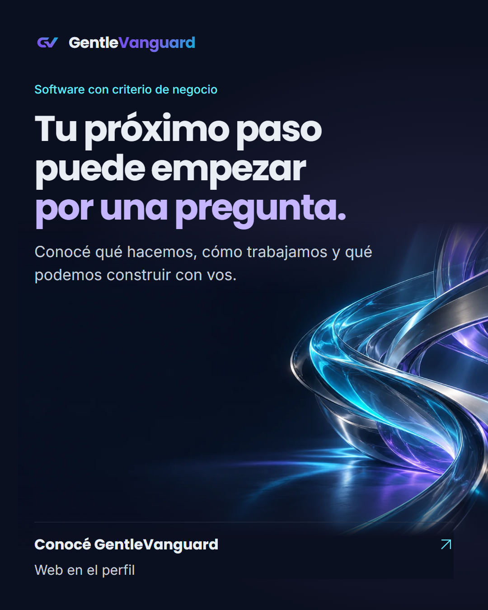
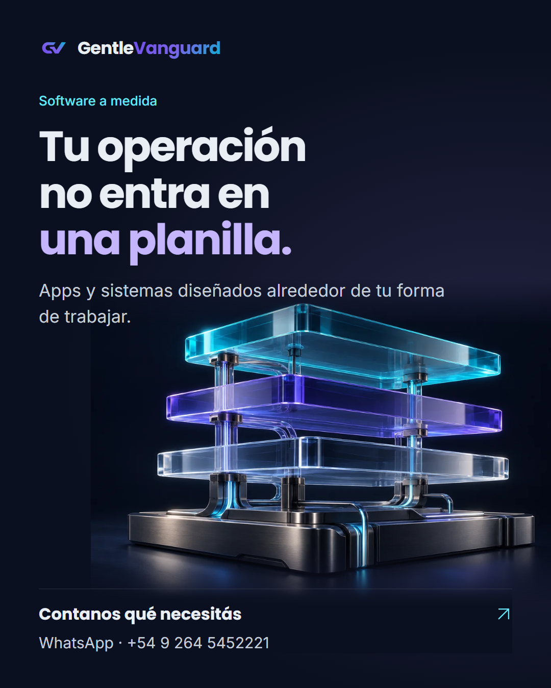
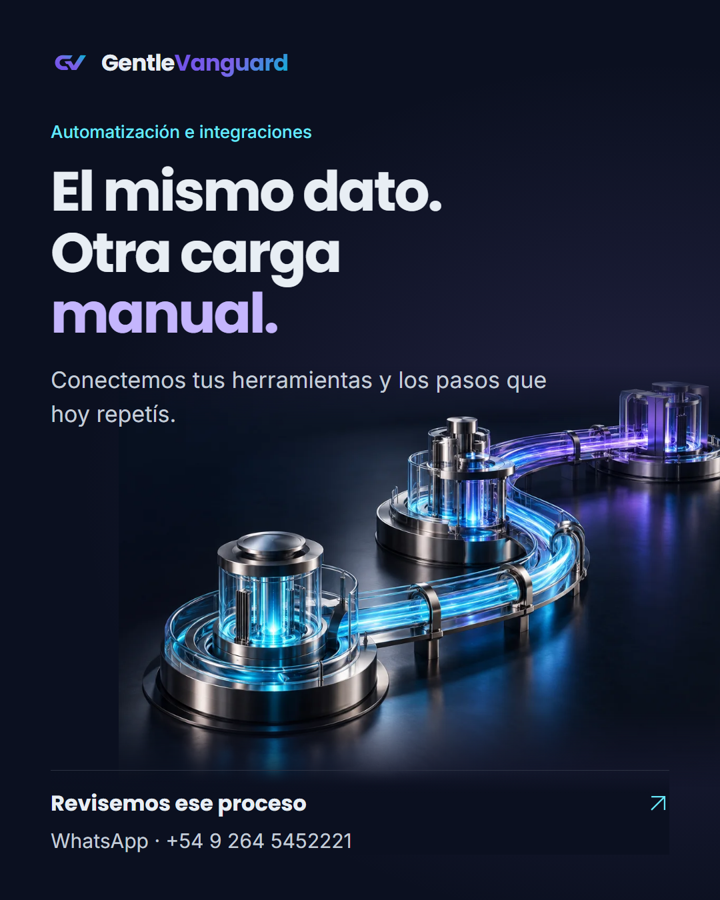
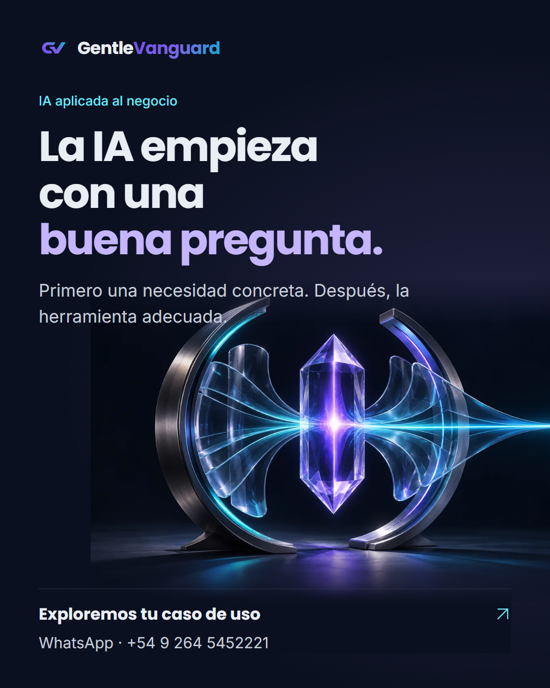
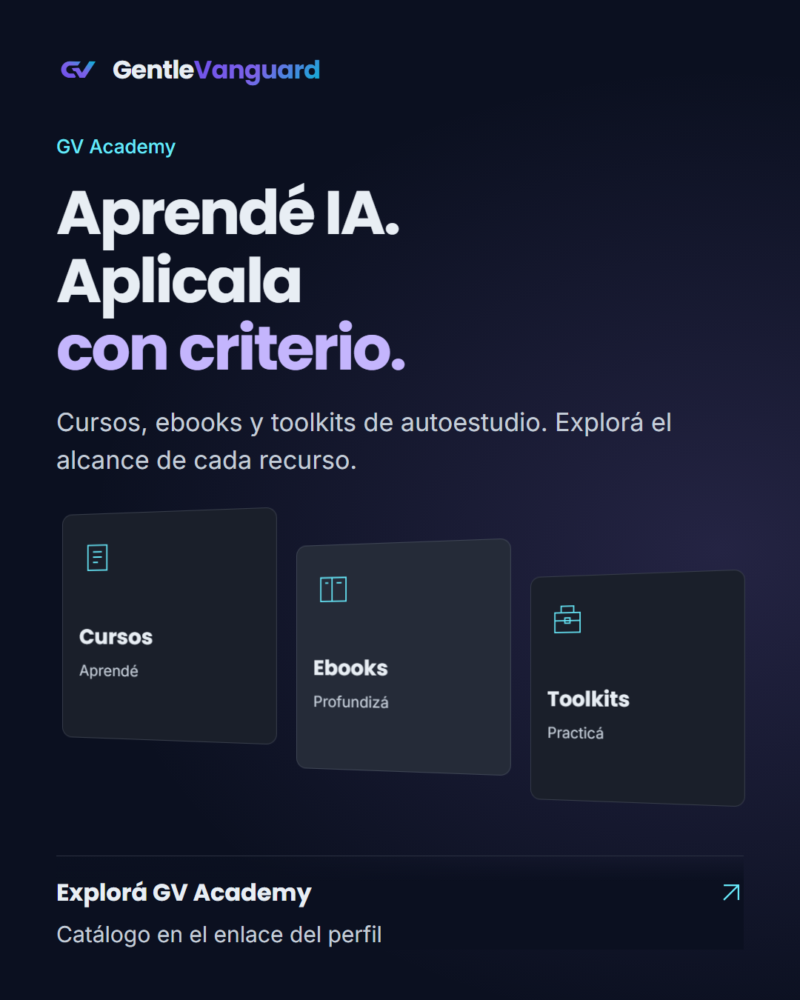

GentleVanguard · Propuesta de campaña
Cinco mensajes independientes. Una misma identidad.

1. Software con criterio de negocio
2. Software a medida
3. Automatización e integraciones
4. IA aplicada al negocio
5. GV Academy